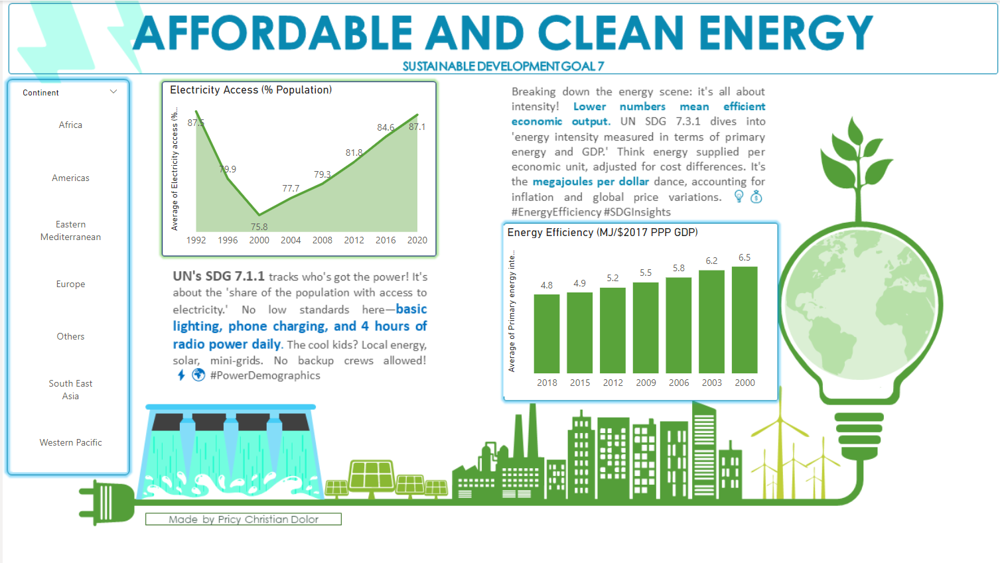
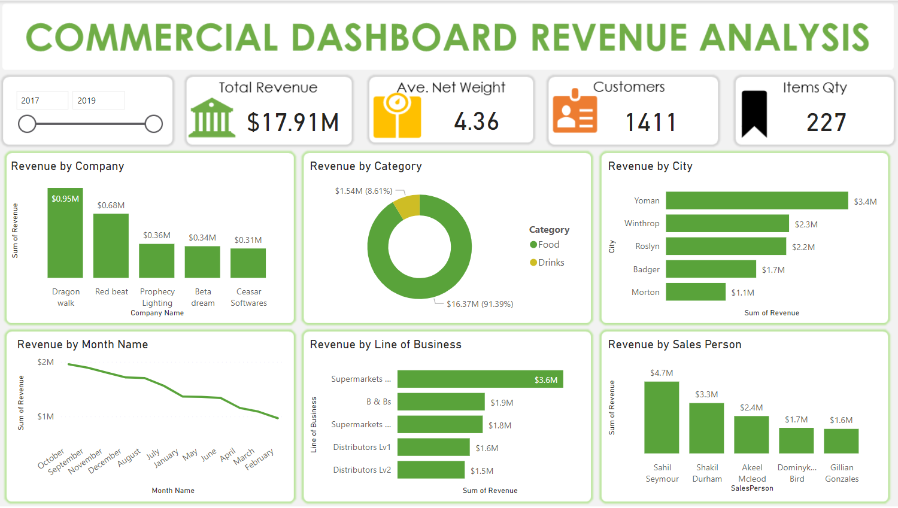
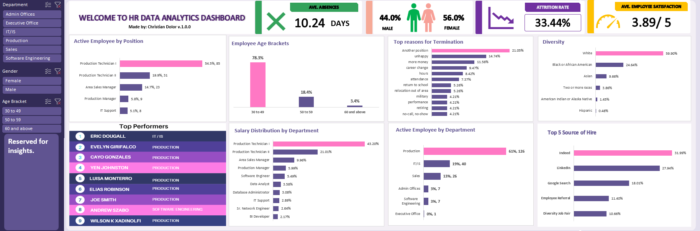
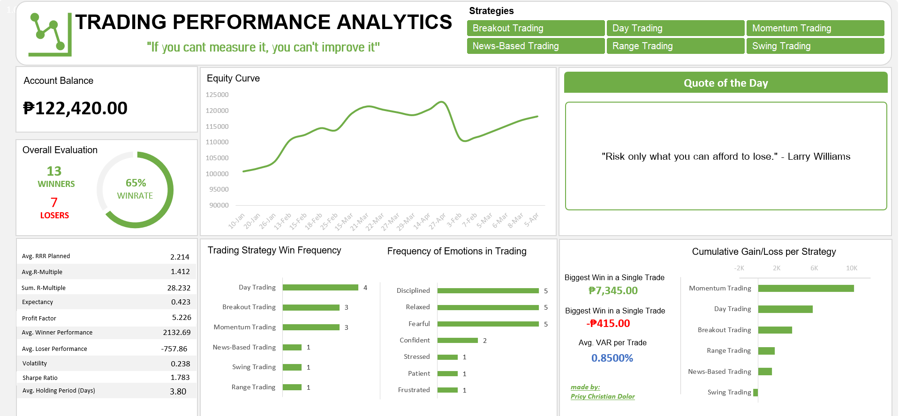

"In this project, I created an online library management system with MS SQL server.
It organizes books, authors, members, and transactions, facilitating easy record management.
Users can efficiently add, update, and delete records, while MS SQL queries enhance search capabilities.
The system generates reports on book circulation and overdue items, offering valuable insights for
effective library administration."
"In this project, we enhanced the HR dataset by conducting thorough and precise data cleaning. Our process involved identifying and correcting inconsistencies, ensuring the dataset meets the highest standards of accuracy and reliability."
"In-depth exploration of the COVID-19 dataset using SQL Server. This process involves thorough analysis and examination of the data to uncover insights, trends, and patterns related to the pandemic."

"In this project, I showcased my Power BI skills by retrieving data from https://ourworldindata.org/ and using it to create an interactive demographics presentation. The goal was to contribute to the dissemination of one of the 17 sustainable development goals, and I specifically focused on "Affordable and Clean Energy"."

"In this project, I extracted data from a specific company and transformed it into a dashboard that showcases total revenue across various categories. Additionally, I provided valuable information to assist the company in identifying key areas of focus. All of these visualizations were created using Power BI."

"In the HR data analytics dashboard created using Excel, key metrics such as average absences, attrition rate, employee satisfaction, age brackets, diversity, and other relevant indicators are prominently displayed. This comprehensive overview provides a valuable snapshot of the organization's workforce dynamics, allowing for informed decision-making and strategic planning in human resources management."

"As a fellow trader, I understand the challenges of quantifying trading performance and identifying the right metrics to gauge success or areas for improvement. In response, I've developed a user-friendly and free trading analytics tool. This initiative is my way of giving back to the trading community. The analytics tool empowers traders by providing a straightforward means to measure performance, aiding them on their trading journey."
""As a dedicated professional, I am committed to continuous learning and the pursuit of knowledge to enhance my skills, contribute to the success of my company, and positively impact my community. Striving for improvement is key to personal and collective growth. Below, you will find a list of the trainings and certificates I have completed to refine my skills. I am eager to expand this list as my career evolves. Click below to view them.""
""Engaging in projects is synonymous with honing skills; the more projects I undertake, the closer I move toward excellence. Enclosed are additional collections of my projects, and I look forward to continually expanding this portfolio as I progress in my career. Feel free to click and explore them.""